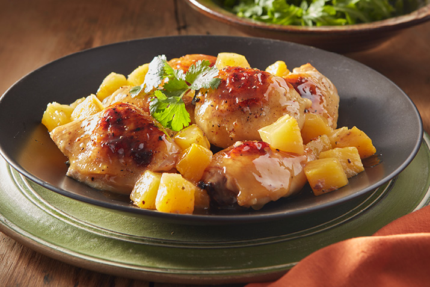

Chicken Hamonado Recipe
What is Chicken Hamonado?
Chicken hamonado is a Filipino dish that is sweet and savory.
It is made by cooking chicken in a mixture of pineapple
juice, soy sauce, brown sugar, garlic, and onion.
The chicken is usually marinated in the mixture before cooking to
enhance its flavor.
The dish is best served with a cup of warm white rice.
Ingredients
2 lbs. chicken cut into serving pieces
1 can pineapple tidbits 20 oz.
3 tablespoons brown sugar
1/4 cup soy sauce
1 piece onion chopped
4 cloves garlic crushed
5 tablespoons cooking oil
Salt and ground black pepper to taste
Instructions / How to Cook
1. Combine chicken, pineapple juice from the pineapple tidbits can, and soy sauce in a bowl. Mix well. Cover and refrigerate overnight.
2. Arrange a colander over a large bowl. Pour the chicken mixture. Let the it stay for 10 minutes or until the marinade completely drips-off the chicken. Set the marinade aside.
3. Heat oil in a cooking pot. Pan-fry chicken for 2 to 3 minutes per side. Remove from the pot. Set aside.
4. Using the remaining oil, saute onion and garlic until onion softens.
5. Add chicken pieces,. Pour marinade. Let boil. Cover and cook in low heat for 30 to 35 minutes. Note: add water as needed.
6. Add sugar and pineapple tidbits. Stir. Cover and continue to cook for 10 minutes.
7. Season with salt and pepper.
8. Transfer to a serving plate. Serve. Share and enjoy!